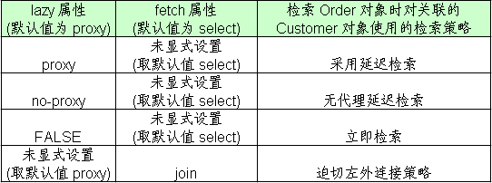

Hibernate的检索策略主要围绕着两个问题展开：
- 如何不浪费内存，因此出现了延迟加载的策略，在需要的时候操发送SQL获取。在需要只传入引用的情况就暂时不先将其所有的数据都加载。
- 如何尽可能的减少SQL语句的发送，完成同一个功能可以有许多方式
- 直接通过Select的方式
- 通过join链接方式
- 通过子查询的方式，先获取到一组数据通过in关键字链接起来进程查询
- 在多对多关系的时候，是一次性加载多个Set中的元素还是一个一个的加载
而Hibernate通过XML的一系列设置去控制以上的种种设置。
单个类级别的检索策略
单个类级别的检索策略可以通过设置class标签的lazy属性来确定其是否是支持懒加载，一下是其关键点：
- 无论
<class>元素的 lazy 属性是 true 还是 false, Session 的 get() 方法及 Query 的 list() 方法在类级别总是使用立即检索策略,而只有load方法根据懒加载的方式来加载 - 若
<class>元素的 lazy 属性为 true 或取默认值, Session 的 load() 方法不会执行查询数据表的 SELECT 语句, 仅返回代理类对象的实例, 该代理类实例有如下特征:- 由 Hibernate 在运行时采用 CGLIB 工具动态生成
- Hibernate 创建代理类实例时, 仅初始化其 OID 属性
- 在应用程序第一次访问代理类实例的非 OID 属性时, Hibernate 会初始化代理类实例
一对多和多对多的检索策略
在一对多和多对多关系中，Set元素就是关键，而在刚开始提到的几种策略在这里都适用。
lazy: 主要决定 orders 集合被初始化的时机. 即到底是在加载 Customer 对象时就被初始化, 还是在程序访问 orders 集合时被初始化
- 1-n n-n的集合属性默认使用懒加载的检索策略，即lazy=true
- lazy还可以设置为extra，是增强的延迟检索，该值会尽可能延迟集合的初始化的时机！
- 例如，在执行集合的size方法获取大小，以及使用contains方法的时候只是发送select语句来得到大小或者判断是否存在，准确的说：程序第一次访问 order 属性的 size(), contains() 和 isEmpty() 方法时, Hibernate 不会初始化 orders 集合类的实例, 仅通过特定的 select 语句查询必要的信息, 不会检索所有的 Order 对象
- 当程序第一次访问 orders 属性的 iterator() 方法时, 会导致 orders 集合代理类实例的初始化
- 上面描述了增强的延迟初始化激活的时机，下面总结普通的延迟检索执行的时机
- 应用程序第一次访问集合属性: iterator(), size(), isEmpty(), contains() 等方法
- 通过
Hibernate.initialize()静态方法显式初始化
fetch: 取值为 “select” 或 “subselect” 时, 决定初始化 orders 的查询语句的形式; 若取值为”join”, 则决定 orders 集合被初始化的时机
顾名思义，select是采用select语句获得集合信息，subselect则是通过子查询来获得集合信息，前者与后者最大的区别就是前者要完成子查询的功能的时候必然会发送两条SQL，先完成子查询的功能，再拿结果来select，而子查询只需要一次。这就是关键，也是前面所讨论的SQL语句个数问题的体现。
join在加载1的一端的对象时候使用迫切左外链接（使用左外连接查询，并且将集合属性进行初始化）因此可以推断
- lazy延迟检索失效（两张表的操作，就没有必要使用Lazy了）
其他需要注意的点：
- HQL查询忽略fetch=join的取值
- Query 的list() 方法会忽略映射文件中配置的迫切左外连接检索策略, 而依旧采用延迟加载策略
batch-size 可以设置一次性初始化set集合元素的数量，使用fatch=select的情况下，获取一个集合元素就会发送一条SQL语句，此时可以通过batch-size来减少SQL语句发送的条数，但是，对于fatch=subselect的情况下，batch-size就不起作用了。（一次性将需要作为子查询的id全部取出了）
多对一和一对一关联的检索策略
和 <set> 一样,<many-to-one> ,<one-to-one>元素也有一个 lazy 属性和 fetch 属性,由于是对该标签进行操作，就是多对一和一对一的检索策略。
其元素对应的属性值的设置：

其中需要注意的是：
- 无代理延迟检索需要增强持久化类的字节码才能实现
- 迫切左外连接检索策略的优点在于比立即检索策略使用的 SELECT 语句更少.
- Query 的 list 方法会忽略映射文件配置的迫切左外连接检索策略, 而采用延迟检索策略
总结
- 类级别和关联级别的检错策略
- 三种检索策略的运行机制

- set集合配置的检索策略的属性
- 综合比较Hibernate的三种检索策略